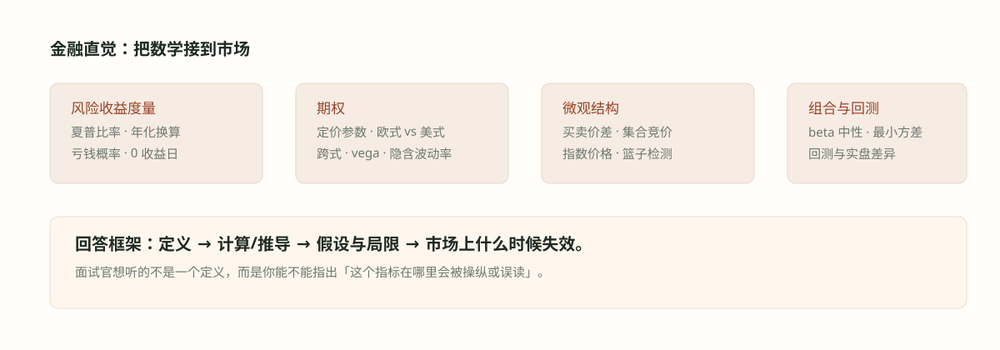

#039. 金融三：市场微观结构

#学习目标：摩擦不是噪音，是定价对象
连续竞价的教科书世界里，价格由供需瞬间出清。真实市场里，你面对的是一个有结构的订单簿（order book）：买方挂在 bid、卖方挂在 ask，两者之间的差——买卖价差（bid-ask spread）——是你每笔往返交易都要交的过路费。微观结构这门学科问的就是：这笔过路费由什么构成、谁在收、一天之内怎么变。
对量化候选人，微观结构题考察两件事：一是你是否理解价差背后做市商（market maker）的成本结构（F7、F16），二是你能否把「从市场数据中反推对手行为」当成一个统计问题来做（F28 的篮子侦测、F4 的信号有效性）。后者其实是把 019 章的假设检验工具搬到了 tick 数据上。
逆向选择成本（和知情者交易）、库存风险（持头寸过夜的波动）、订单处理成本（系统、清算、tick size 下限）。价差是做市商的补偿。
连续竞价：逐笔撮合，价差即时可见；集合竞价（call auction）：先收集订单，再以一个最大化成交量的单一价格出清。
固定权重篮子交易在成交流里留下统计指纹：同时、同向、金额比例恒定。侦测它是相关性、回归与主成分分析的组合拳。
#价差从哪里来：做市商的三项成本
做市商的生意是：同时挂买卖单、赚取价差。这笔收入要覆盖三类成本，价差因此可以分解为
怎么读：第一项补偿「和比你更知情的人交易」的损失——财报临近、消息未出时，对面更可能是知情者，价差必须拉宽自我保护（逆向选择，adverse selection）；第二项补偿被动持仓的风险——接了卖单就持有多头库存，标的波动越大、预期持有期越长，要求的补偿越多；第三项是摊销的固定成本（席位、清算、系统）加上竞争压缩后的利润，最小报价单位（tick size）给出价差的下限。
这个分解直接预言了价差的日内形态（F7 的答案）：开盘时段隔夜信息一次性涌入，知情交易占比最高、标的不确定性最大，价差最宽；盘中信息被逐步消化、做市商竞争充分，价差收窄到接近 tick 下限；临近收盘，收盘集合竞价的订单流不平衡加上做市商不愿持有库存过夜，价差再度走阔——整体呈「U 型」反转形态，与波动率的日内 U 型同步。理解这条曲线的钥匙是：价差跟随不确定性，而不是跟随成交量。
想象做市商在开盘时的处境：过去十几个小时累积的新闻、财报、隔夜外盘全部还没被价格吸收，他对「公平价」的把握最差；此时主动来交易的对手又最可能是消化了这些信息的人。报价宽是理性的自我保护——宁可少成交，不可被单边打穿。反过来，午间时段没有新信息、双方都在等下午数据，价差收到最窄。
#价格如何形成：集合竞价、指数与篮子
连续竞价之外，开盘与收盘通常采用集合竞价（call auction）：一段时间内只收单不撮合，把所有限价单聚成静态供需曲线，然后用一个单一价格一次性出清。出清价格的选取规则是「最大化成交量」：对每个候选价格 \(p\)，计算买侧限价 \(\ge p\) 的累计需求 \(D(p)\) 与卖侧限价 \(\le p\) 的累计供给 \(S(p)\)，可行成交量是 \(\min(D(p),S(p))\)，取使其最大的价格。因为所有成交都在同一价格发生，集合竞价瞬间消灭了价差——开盘前的宽价差正是被这个机制一次性收敛的。
指数价格与市场价格（F17 的骨架）：指数不是一种资产，它是成分股价格按权重的归一化加权平均，\( \text{Index}=\sum_i w_i P_i/\text{Divisor} \)。市值加权指数（如标普 500）的权重 \(w_i\) 由自由流通量（free float）市值决定；价格加权指数（如道指）直接以股价为权重。除数（divisor）在拆股、成分调整时被调整以保持指数连续。指数与「市场价格」的联动靠套利维持：指数期货、ETF 与成分股组合之间存在期现套利（index arbitrage），三者谁偏离就会被拉回；价格发现的顺序通常是期货领先现货、成分股中的大盘股领先小盘股。
篮子交易的侦测（F28 的骨架）：交易对手若按固定权重（如 50%/30%/20%）持续执行一个篮子，会在三只票的成交流上留下三个指纹：时间上同步（同毫秒级窗口内同向成交）、比例上恒定（净流金额之比恒为 5:3:2）、行为上规律（算法执行通常按固定间隔切片）。统计工具：对三只票的高频净流做主成分分析（PCA），第一主成分载荷若近似 \((0.5,0.3,0.2)\) 且解释比例异常高，就是强指纹；再用时间戳对齐与回归残差确认。
#例题详解一：价差与价格形成
例题 1（源题 F7）：买卖价差在交易日内如何演变？为什么？
建模。把价差写成三项成本之和，再问每项成本在一天内如何变化。
推导（口径）。形态：开盘最宽 → 上午逐步收窄 → 午间最窄（接近 tick size 下限）→ 尾盘再度走阔。机制逐段对应：① 开盘：隔夜信息未被吸收，知情交易占比最高（逆向选择成本最大），且「公平价」不确定性最大（库存风险最高）→ 最宽；② 盘中：信息被连续竞价逐步消化，多个做市商竞争挂单，价差被压到补偿水平；③ 午间：无新信息、流动性需求最低 → 最窄；④ 收盘前：收盘集合竞价的订单流不平衡暴露、做市商压平库存不愿隔夜 → 再度走阔。整条曲线与波动率的日内 U 型高度同步——价差跟随不确定性。
检验。两个自洽检查：小盘股、财报日、宏观数据日的 U 型整体上移（信息不对称更大）；实行收盘集合竞价的市场里，连续时段尾部的走阔会被竞价前的最后报价收敛部分吸收，形态在竞价机制切换处出现台阶。
面试怎么讲。先画 U 型再讲三段机制，并主动点题：「价差的日内形态是三项成本的日内形态——逆向选择在开盘最贵，库存风险在开盘和收盘都贵，竞争在盘中把价差压到 tick 附近。」
例题 2（源题 F16）：影响买卖价差的因素有哪些？
建模。把「影响因素」翻译成「对三项成本的影响」，答案自动成结构。
推导（口径）。① 信息不对称：知情交易者比例、财报与新闻事件临近 → 逆向选择成本上升；② 波动率：标的波动越大，库存价值的不确定性越大 → 库存成本上升；③ 流动性与竞争：做市商数量、成交活跃度、订单深度 → 处理成本被竞争摊薄；④ 最小报价单位 tick size：价差的制度性下限，tick 调大价差下限抬升、挂单深度增加；⑤ 交易机制与费用：交易所返佣、清算费、监管约束；⑥ 标的性质：市值小、散户主导、分析师覆盖少的票三项成本都更高。
检验。用分解自查口径完整性：任何你能想到的因素（财报、波动率、竞争、tick、市值）都必须能挂到三项成本之一上，否则说明分解漏项。
面试怎么讲。先给分解式「价差 = 逆向选择 + 库存风险 + 处理成本 + 利润」，再把因素逐个挂上去；这比背十个因素更显结构化。
例题 3（源题 F29）：收盘后的集合竞价中，价格是如何形成的？
建模。收盘集合竞价收集一段时间的限价单与市价单，以单一价格最大化成交量。用一个小订单簿走一遍算法。
推导。设收盘阶段收到的订单：买侧限价单 500 股 @ 101、300 股 @ 100.5、200 股 @ 100；卖侧限价单 400 股 @ 99、200 股 @ 100.5、300 股 @ 101。对每个候选价格计算累计需求 \(D(p)\)（限价 \(\ge p\) 的买单）、累计供给 \(S(p)\)（限价 \(\le p\) 的卖单）与可行成交量 \(\min(D,S)\)：
| 候选价格 | 累计买量 \(D(p)\) | 累计卖量 \(S(p)\) | 可成交量 |
|---|---|---|---|
| 101.0 | 500 | 900 | 500 |
| 100.5 | 800 | 600 | 600（最大） |
| 100.0 | 1000 | 400 | 400 |
| 99.0 | 1000 | 400 | 400 |
最大化成交量（600 股）的价格为 100.5，即收盘价；所有限价优于它的订单按 100.5 成交，两侧未成交部分进入下一交易日。市价单视为限价无穷弹性，直接并入累计量。若多个价格成交量相同，各市场按参考价最近或随机收盘等规则打破平局。
检验。合理性自查：出清价 100.5 落在买卖限价的交集区间内，恰为供需曲线的交点；出清后，限价 100.5 及以下的 200 股买单（800 愿买成交 600）未成交，卖侧 600 股全部成交、无剩余，两侧未成交余量与限价分布一致。
面试怎么讲。「集合竞价是把时间换价格：先冻结订单流聚出供需曲线，再选最大化成交量的单一价格出清。它瞬间消灭价差与打穿风险，代价是等待期间的报价不确定。」
例题 4（源题 F17）：指数价格与市场价格是什么关系？
建模。「指数价格」是成分股价格的加权汇总，「市场价格」是全部参与者真实成交的结果，两者通过构成规则与套利连接。
推导（口径）。① 构成：指数 \(=\sum_i w_i P_i/\text{Divisor}\)。权重方案：价格加权（道指，权重即股价）、市值加权（标普 500，权重为市值）、自由流通市值加权（剔除锁定股份，是主流）；② 连续性：拆股、分红方式切换、成分调整时调整除数，指数不因公司行为跳变；③ 联动：指数本身不可交易，但指数期货、ETF 与成分股组合互为复制，期现偏差一旦超过持有成本即触发指数套利（index arbitrage），把三者锁在一起；④ 价格发现顺序：期货通常领先现货数十至数百毫秒，成分股中的大盘股领先小盘股，指数更多是「汇总」而期货是「发现」；⑤ 指数是规则化产物：成分调整公告本身引发资金流（被动基金必须跟进），这是「市场价格」对「指数规则」的反向反应。
检验。自洽检查：价格加权指数里高价股主导权重，一只股票拆股（价格减半）若不调除数会导致指数跳变——所以道指用除数调整；市值加权指数的权重随价格漂移，无需频繁再平衡，这是它成为主流的原因之一。
面试怎么讲。三段式：「指数是成分股的加权平均（构成规则）；它不是可交易资产，靠期货/ETF 套利与现货锁在一起（联动机制）；价格发现发生在期货与活跃成分股，指数是结果不是原因（发现顺序）。」
#例题详解二：侦测、信号与蒙特卡洛
例题 5（源题 F28）：已知某对手方按固定权重（如股票 A 50%、B 30%、C 20%）交易一个篮子，你如何从市场成交数据中侦测出这些篮子交易？
建模。侦测 = 在带噪声的成交流里找「同步、同向、定比」的联合指纹。设三只票的分钟级净流（买单量减卖单量）为向量序列 \(f_t=(f^A_t,f^B_t,f^C_t)\)，篮子执行贡献的成分是 \(\lambda_t\,(0.5,0.3,0.2)\)，其余是各自独立的噪声流。
推导（口径）。四步：① 时间戳对齐：把三只票的逐笔成交按毫秒窗口对齐，篮子执行表现为几乎同时出现的同向小单（算法切片常用固定间隔、固定手数，odd lot 占比上升）；② 比例检验：对对齐后的净流做回归 \(f^A_t=\alpha+\beta_1 f^B_t+\beta_2 f^C_t+\varepsilon_t\)，篮子流隐含 \(f^A:f^B:f^C=5:3:2\)，检验系数是否稳定等于 \(\tfrac{5}{3}\)、\(\tfrac{5}{2}\)；③ 主成分分析：对净流协方差矩阵做 PCA，若第一主成分载荷 \(\approx(0.5,0.3,0.2)\)（归一化后）且解释比例显著高于对照期，即为篮子指纹；④ 对照组：与同行业其他股票、与历史常态期比较，排除板块共同流与指数再平衡造成的同步。
检验。用已知的历史篮子执行日（如指数调仓日）回测侦测率与误报率；把窗口宽度从毫秒扫到分钟，真实篮子的统计指纹应在某个尺度上最锐利。
面试怎么讲。「篮子交易在数据里留下的不是单笔大单，而是三只票同步、同向、金额比例恒定的小单流。我用时间对齐 + 比例回归 + PCA 三件套找这个联合指纹，再用对照期控制误报。」
例题 6（源题 F4）：若两个事件 53% 的时间同时发生，能否把其中一个当作另一个的信号？
建模。「同时发生的频率」本身不含基准率（base rate）信息，必须先补齐边际概率 \(\mathbb{P}(A)\)、\(\mathbb{P}(B)\) 再谈关联与显著性。
推导。独立基准下的同现率是 \(\mathbb{P}(A)\mathbb{P}(B)\)，信号强度用提升度（lift）衡量：\(\text{lift}=\mathbb{P}(A\cap B)/(\mathbb{P}(A)\mathbb{P}(B))\)。反例说明 53% 无法单独定方向：若 \(\mathbb{P}(A)=\mathbb{P}(B)=0.6\)，独立同现仅 36%，53% 意味着 lift \(\approx 1.47\) 的正关联；但若 \(\mathbb{P}(A)=\mathbb{P}(B)=0.9\)，独立同现高达 81%，53% 反而是负关联。即便确认了正关联，还要过两关：统计显著性——样本量 \(n\) 下同现率的标准误为 \(\sqrt{p(1-p)/n}\)，53% 是否显著异于基准要看 \(n\)（检验框架见 019 章）；经济显著性——条件概率的提升幅度必须覆盖交易成本，53% 对 51% 的提升在大样本下可以显著但无法变现。
检验。自检链条完整性的三个问题：基准率是多少（定方向）？样本多大、是否样本外稳定（定显著性）？提升幅度减去成本还剩多少（定可用性）？三者缺一不可。
面试怎么讲。「不能直接下结论。同现频率要除以独立基准（lift）才有方向；再检验样本内显著性与样本外稳定性；最后看提升幅度是否过成本线。53% 这个数字本身既可能是强信号，也可能是负关联。」
例题 7（源题 F23）：什么是蒙特卡洛方法？它有什么用途？用它估计 \(\pi\)。
建模。蒙特卡洛（Monte Carlo）= 用随机样本逼近期望：若要估计 \(\theta=\mathbb{E}[f(X)]\)，抽 \(n\) 个独立样本 \(X_i\)，用 \(\hat{\theta}=\frac{1}{n}\sum_i f(X_i)\)；大数定律保证收敛，中心极限定理给出误差棒按 \(1/\sqrt{n}\) 缩小。
推导。估计 \(\pi\)：在单位正方形 \([0,1]^2\) 上均匀撒点 \((X_i,Y_i)\)，落入四分之一圆（\(X_i^2+Y_i^2\le 1\)）的期望比例为 \(\pi/4\)，于是
数值例：\(n=10^4\) 时典型结果 \(\hat{\pi}\approx 3.15\)，SE \(\approx 0.016\)；精度提高一位需要 \(n\) 放大 100 倍。
检验。估计量无偏性来自指示变量期望恰为 \(\pi/4\)；\(1/\sqrt{n}\) 收敛是概率意义的——重跑一次结果会变，方差按公式可预期。用途清单：路径依赖期权定价（亚式、障碍）、风险度量（VaR、预期损失）、高维积分、算法与策略的压力测试（代码实现见 035 章）。
面试怎么讲。「蒙特卡洛是用样本频率逼近期望的通用积分器：\(\mathbb{E}[f(X)]\approx\frac1n\sum f(X_i)\)，误差 \(1/\sqrt{n}\) 与维度无关是它对高维问题的价值。估 \(\pi\) 就是把 \(\pi/4\) 写成四分之一圆指示变量的期望。」
#误区与边界
① 「价差窄 = 流动性好」——价差只是流动性的一个维度，深度（挂单量）与弹性（冲击后恢复速度）同样重要，窄价差 + 一击穿簿的例子很多；② 「集合竞价价格 = 公允价」——收盘竞价同样可能被 MOC 订单前调和操纵，出清价反映的是收盘那一刻的订单流不平衡；③ 指数有规则性前视——成分调整是提前公告的，被动资金流可预测，把指数当成「市场本身」会混淆规则与行为；④ 篮子侦测最大的敌人是过拟合：任何三只票都能算出主成分，没有对照期的「发现」多半是噪声；⑤ F4 的教训推广：任何「X% 同时发生 / X% 相关」的说法没有基准率与样本量都不能解读。
常见变式：把 F7 改成「为什么美股开盘价差比收盘更宽」（隔夜信息 vs 收盘前被动指数流）；把 F29 改成「如果最大化成交量的价格有多个怎么办」（参考价最近原则、随机收盘）；把 F28 改成「对手是 VWAP/TWAP 算法你还能侦测吗」（固定间隔切片在时间轴上留下周期性，傅里叶/自相关可查）；把 F23 改成「怎么降方差」（对偶变量、控制变量、重要性采样——能报出名字即加分）。
#检查清单
- 我能把价差分解为逆向选择、库存风险、订单处理成本加利润，并据此解释日内的 U 型形态。
- 我能列出影响价差的因素并把每个因素挂到三项成本上（波动率、事件、竞争、tick size、市值）。
- 我能在给定的限价单簿上手工算出集合竞价的出清价：取使 \(\min(D(p),S(p))\) 最大的单一价格。
- 我能解释指数的构成（加权方案、自由流通量、除数）及其与期货、ETF 的套利联动。
- 我能设计篮子侦测方案：时间对齐、比例回归、PCA 指纹与对照组校验。
- 我知道同现频率必须换算成 lift 并检验显著性与成本线，不能只看 53% 这个数字。
- 我能写出蒙特卡洛的估计式与 \(1/\sqrt{n}\) 误差，并用撒点法估计 \(\pi\)。
- 我能说出价差之外流动性的另外两个维度：深度与弹性。